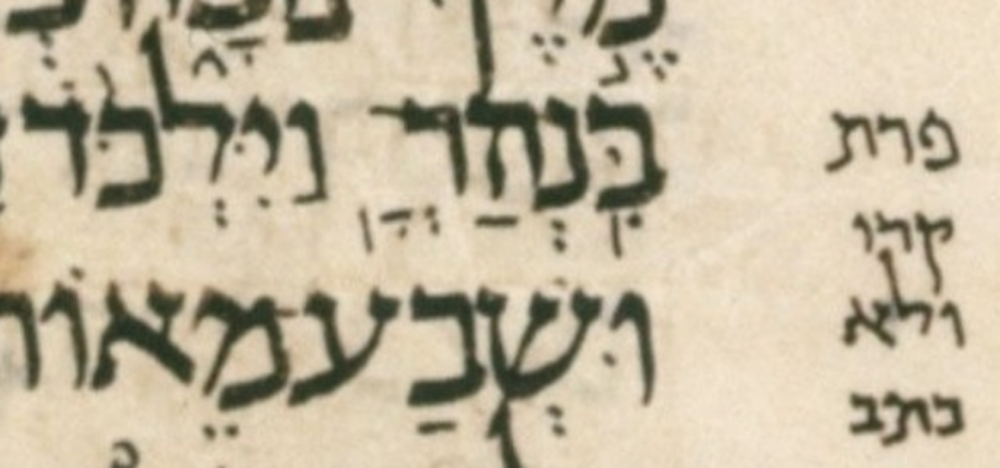

| bcv (link to tanach.us) | 2s8:3 |
| MPK | ◌ְ◌ָֽ◌׃ |
| qere | פְּרָֽת׃ |
| at issue | פּ |
| at issue English | added a dagesh to pe |
| folio col line | 172B 2 20 |
The MPK has no letter to carry a dagesh for the qere’s פ. The MPK (points on no letters) is sheva, qamats, and siluq.